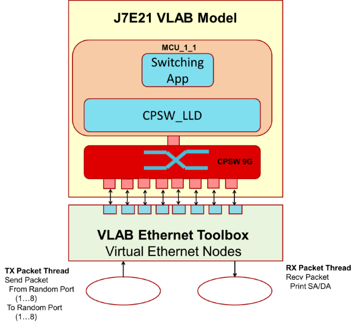
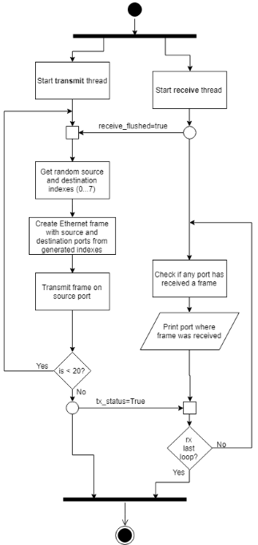
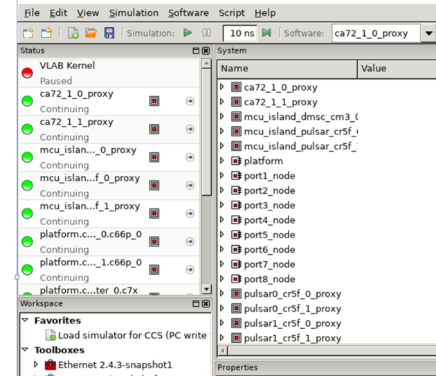
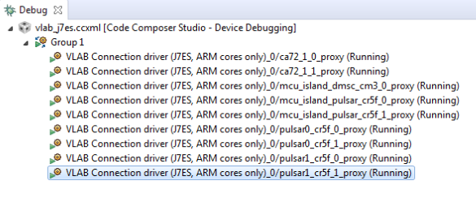
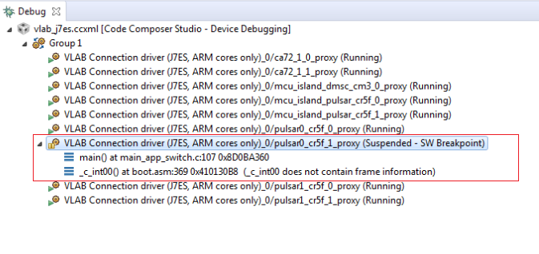
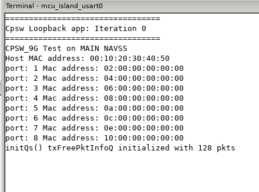

|
Ethernet Firmware
|
|
Ethernet Firmware
|
This application demonstrates basic Layer-2 switching among the ports in the CPSW switch. The traffic forwarding process among the ports don't require CPU involved or DMA bandwidth as everything is completely handled by CPSW hardware.
This application runs on the VLAB simulator for J721E CPSW 9G peripheral. A Python-based script is provided to generate Ethernet frames which are injected to the external ports of the CPSW switch. The source and destination ports are randomly chosen in order to guarantee that all ports of the switch are properly verified for frame transmission and reception.

The following diagram shows interaction of J721E VLAB model, the VLAB test script and the Layer-2 switching application.

This application depends on multiple components and are detailed in sections below:

Not applicable.
./scripts/vlab_switch_test/switch_logic_9g.pyset_preferences(vlab_path=["<ethfw_xx_yy_zz_bb>/scripts/vlab_switch_test"]) vlab.path+=["<ethfw_xx_yy_zz_bb>/scripts/vlab_switch_test"]
load("<ethfw_xx_yy_zz_bb>/scripts/vlab_switch_test/run_switch_logic_9g.py")
Verify that the status of all cores in the Status panel are in loaded state as shown in picture below:

vlab.display_terminal(vlab.terminal.mcu_island_usart0);
Open Code Composer Studio and launch the Target Configuration previously setup (refer to Pre-requisites)

In Code Composer Studio, select pulsar0_cr5f_1_proxy from the list of cores in the Debug panel

In the Load Program window, browse the EthFw Layer-2 switching application binary. It can be found at ethfw_0_08_00_01/out/J721E/R5F/SYSBIOS/debug/ethfw_app_switch_tirtos_mcu_2_1.xer5f

Resume all other cores by selecting each of them from the list of cores in CCS' Debug panel, and then Run -> Resume or just hitting F8

run()
In Code Composer Studio, resume pulsar0_cr5f_1_proxy core by selecting it from the list of cores in the Debug panel, and then select Run -> Resume or just hitting F8

In VLAB, verify that VLAB's mcu_island_uart0 terminal displays all ports with MAC addresses as follows:

load("switch_logic_9g.py")
Below is a sample log from the execution of this demo application.
Cpsw Loopback app: Iteration 0 ================================= CPSW_9G Test on MAIN NAVSS Host MAC address: 00:10:20:30:40:50 port: 1 Mac address: 02:00:00:00:00:00 port: 2 Mac address: 04:00:00:00:00:00 port: 3 Mac address: 06:00:00:00:00:00 port: 4 Mac address: 08:00:00:00:00:00 port: 5 Mac address: 0a:00:00:00:00:00 port: 6 Mac address: 0c:00:00:00:00:00 port: 7 Mac address: 0e:00:00:00:00:00 port: 8 Mac address: 10:00:00:00:00:00 initQs() txFreePktInfoQ initialized with 128 pkts
VLAB 2.4.6
Copyright (c) VLAB Works Pty Ltd, 2008-2018. All Rights Reserved.
VLAB> load(u"/home/a0132233/vlab-works/utilities/simulator/astc/run_switch_logic_9g.py")
Keystone Virtual Platform Toolbox (J7ES) 0.14.5-snapshot17
Fast Models [11.2.37 (Dec 11 2017)]
Copyright 2000-2017 ARM Limited.
All Rights Reserved.
C7X model based on Loki ver. 04.7.373 (clock: 50.000000 MHz)
Debug server (CCS) started on port 23456
Simulation paused at 0 s (delta 3)
WARNING: break point will only be enabled when 'pulsar0_cr5f_1_proxy' completes its current execution block
WARNING: break point requested by external debugger will only be enabled when 'pulsar0_cr5f_1_proxy' completes its current execution block
VLAB> run()
ARM Core Model: WARNING - Simulation code-translation cache failed to gain DMI for PC=0x00000000. Simulation performance will be reduced.
VLAB> load("switch_logic_9g.py")
tx_status: True
receive_flushed: True
Port1 received: EthernetFrame(0xffffffffffff, 0x1020304050, 518) :-)
Port2 received: EthernetFrame(0xffffffffffff, 0x1020304050, 518) :-)
Port3 received: EthernetFrame(0xffffffffffff, 0x1020304050, 518) :-)
Port4 received: EthernetFrame(0xffffffffffff, 0x1020304050, 518) :-)
Port5 received: EthernetFrame(0xffffffffffff, 0x1020304050, 518) :-)
Port6 received: EthernetFrame(0xffffffffffff, 0x1020304050, 518) :-)
Port7 received: EthernetFrame(0xffffffffffff, 0x1020304050, 518) :-)
Port8 received: EthernetFrame(0xffffffffffff, 0x1020304050, 518) :-)
receive flush done
Port4 -> Port5: EthernetFrame(0xa0000000000, 0x80000000000, 200)
Port5 received: EthernetFrame(0xa0000000000, 0x80000000000, 200) :-)
Port5 -> Port2: EthernetFrame(0x40000000000, 0xa0000000000, 200)
Port2 received: EthernetFrame(0x40000000000, 0xa0000000000, 200) :-)
Port7 -> Port2: EthernetFrame(0x40000000000, 0xe0000000000, 200)
Port2 received: EthernetFrame(0x40000000000, 0xe0000000000, 200) :-)
Port4 -> Port1: EthernetFrame(0x20000000000, 0x80000000000, 200)
Port1 received: EthernetFrame(0x20000000000, 0x80000000000, 200) :-)
Port6 -> Port4: EthernetFrame(0x80000000000, 0xc0000000000, 200)
Port4 received: EthernetFrame(0x80000000000, 0xc0000000000, 200) :-)
Port5 -> Port2: EthernetFrame(0x40000000000, 0xa0000000000, 200)
Port2 received: EthernetFrame(0x40000000000, 0xa0000000000, 200) :-)
Port2 -> Port3: EthernetFrame(0x60000000000, 0x40000000000, 200)
Port3 received: EthernetFrame(0x60000000000, 0x40000000000, 200) :-)
Port2 -> Port3: EthernetFrame(0x60000000000, 0x40000000000, 200)
Port3 received: EthernetFrame(0x60000000000, 0x40000000000, 200) :-)
Port2 -> Port4: EthernetFrame(0x80000000000, 0x40000000000, 200)
Port4 received: EthernetFrame(0x80000000000, 0x40000000000, 200) :-)
Port3 -> Port4: EthernetFrame(0x80000000000, 0x60000000000, 200)
Port4 received: EthernetFrame(0x80000000000, 0x60000000000, 200) :-)
Port4 -> Port2: EthernetFrame(0x40000000000, 0x80000000000, 200)
Port2 received: EthernetFrame(0x40000000000, 0x80000000000, 200) :-)
Port7 -> Port1: EthernetFrame(0x20000000000, 0xe0000000000, 200)
Port1 received: EthernetFrame(0x20000000000, 0xe0000000000, 200) :-)
Port7 -> Port3: EthernetFrame(0x60000000000, 0xe0000000000, 200)
Port3 received: EthernetFrame(0x60000000000, 0xe0000000000, 200) :-)
Port2 -> Port1: EthernetFrame(0x20000000000, 0x40000000000, 200)
Port1 received: EthernetFrame(0x20000000000, 0x40000000000, 200) :-)
Port5 -> Port1: EthernetFrame(0x20000000000, 0xa0000000000, 200)
Port1 received: EthernetFrame(0x20000000000, 0xa0000000000, 200) :-)
Port5 -> Port2: EthernetFrame(0x40000000000, 0xa0000000000, 200)
Port2 received: EthernetFrame(0x40000000000, 0xa0000000000, 200) :-)
Port7 -> Port6: EthernetFrame(0xc0000000000, 0xe0000000000, 200)
Port6 received: EthernetFrame(0xc0000000000, 0xe0000000000, 200) :-)
Port2 -> Port5: EthernetFrame(0xa0000000000, 0x40000000000, 200)
Port5 received: EthernetFrame(0xa0000000000, 0x40000000000, 200) :-)
Port1 -> Port7: EthernetFrame(0xe0000000000, 0x20000000000, 200)
Transmit Done
Port7 received: EthernetFrame(0xe0000000000, 0x20000000000, 200) :-)
No frame to receive
Receive Done
Done
Ethernet frames in the tests are generated randomly, so the output may be different in reader's test logs.
| Revision | Date | Author | Description |
|---|---|---|---|
| 0.1 | 01 Apr 2019 | Prasad J, Misael Lopez | Created for v.0.08.00 |
 1.8.13
1.8.13